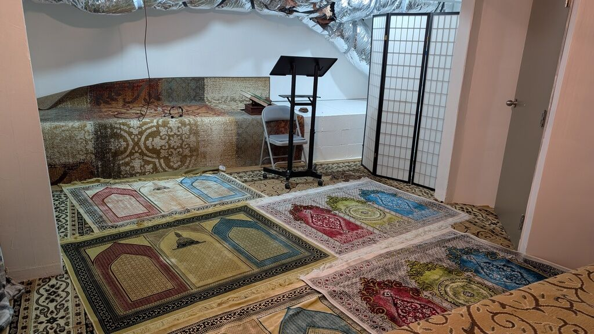

{kind=link}
Prayer Space Address:250 Main St. Klamath Falls OR 97601
Google Maps Link: https://maps.app.goo.gl/FGPiWmAdcdFbe35o7
Directions
Note: It can take a few minutes to park and figure out how to get to the prayer space when it's your first time coming here. We recommend arriving 15 minutes before the start time so you don't miss the beginning of the khutbah inshaaAllah.
1. Park your car anywhere downtown, as close as possible to the 250 main st. address, and head to the "PSE Consulting Engineers Inc." area.
2. Turn left from the front entrance, and go around to the alley in back -- look for a door with a yellow square on it and the letters "KDD". If it is close to Jumuah prayer time, it will be propped open with a piece of 2x4 wood.
3. Enter the back alley door, the rack for your shoes will be on the right.
4. Head down the stairs on the right towards the prayer space.
5. Enter the door and you're at the prayer space. Jumuah mubarak! 🕌🎉🕌🎉🕌🎉🕌🎉
Note: There is a prayer space for women that is separated by a barrier (pictured below).